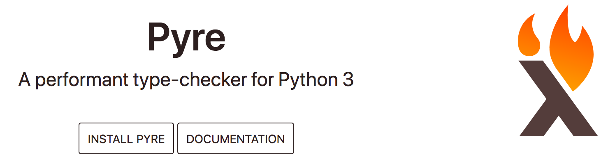
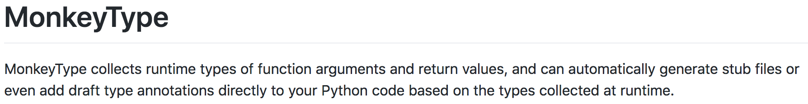
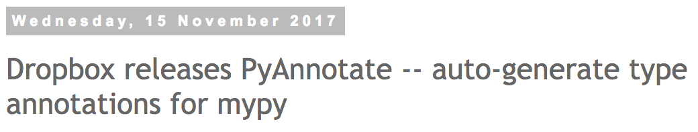

Migrating existing codebases to using type annotations
Stephan Jaensch
@s_jaensch
Yelp's mission
To connect people with great local businesses
What I'll talk about
- What are type annotations, and why you should use them
- How do you incrementally migrate an existing codebase to them
- What are some issues you might encounter
- How can type annotations help across services
Other talks about type annotations
- Carl Meyer: Type-checked Python in the real world (Instagram)
- Greg Price: Clearer Code at Scale: Static Types at Zulip and Dropbox
Python type annotations
def hello(who: str) -> str:
return 'Hello, {}'.format(who)
hello(5)
error: Argument 1 to "hello" has incompatible type "int";
expected "str"
def process_data(self, items):
self.values = [item.value.id for item in items]
Migrate a codebase to using type annotations
- Goal: All code is type annotated
- Incrementally annotate code
- Make sure checks are run for annotated code
The mypy type checker

Pyre
Enforce annotations
[mypy]
check_untyped_defs = True
disallow_untyped_calls = False
disallow_untyped_defs = True
follow_imports = silent
ignore_missing_imports = True
python_version = 3.6
strict_optional = True
warn_redundant_casts = True
Checking source code on commit

Configuring pre-commit
- repo: local
hooks:
- id: mypy
name: mypy
entry: mypy
language: python
language_version: 'python3.6'
additional_dependencies: ['mypy']
args: ['--config-file', 'mypy-pre-commit.ini']
files: ^package_name/.+\.py$
pre-commit install -f --install-hooksChecking source code on commit
Running mypy as part of your test suite
[mypy]
ignore_missing_imports = True
python_version = 3.6
strict_optional = True
warn_redundant_casts = True
Auto-generating type annotations
 Type your data
from typing import Iterable, NamedTuple, Optional
class Business(NamedTuple):
id: int
name: str
photos: Iterable[Photo]
address1: Optional[str]
address2: Optional[str]
address3: Optional[str]
city: str
latitude: float
longitude: float
...
typed dictionaries
from typing import Optional
from mypy_extensions import TypedDict
class BusinessDict(TypedDict):
id: int
name: str
address1: Optional[str]
address2: Optional[str]
def get_biz_address(business: BusinessDict) -> str:
...
value = business.get('adress2', '')
error: TypedDict "BusinessDict" has no key 'adress2'
How to type the helper function?
def namedtuple_from_dict(
nt_class,
dict_values,
):
"""Create a namedtuple from a dict, using the namedtuple
attribute names to look up values in the dict."""
return nt_class._make(
dict_values.get(k) for k in nt_class._fields
)
How to type the helper function?
def namedtuple_from_dict(
nt_class: Type[NamedTuple],
dict_values: Dict[str, Any],
) -> NamedTuple:
"""Create a namedtuple from a dict, using the namedtuple
attribute names to look up values in the dict."""
return nt_class._make(
dict_values.get(k) for k in nt_class._fields
)
error: Incompatible return value type
(got "NamedTuple", expected "Business")
error: Argument 1 to "namedtuple_from_dict" has incompatible
type "Type[Business]"; expected "Type[NamedTuple]"
Using Generics
Struct = TypeVar('Struct', bound=NamedTuple)
def namedtuple_from_dict(
nt_class: Type[Struct],
dict_values: Dict,
) -> Struct:
"""Create a namedtuple from a dict, using the namedtuple
attribute names to look up values in the dict."""
return nt_class._make(
dict_values.get(k) for k in nt_class._fields
)
error: Value of type variable "Struct" of "namedtuple_from_dict"
cannot be "Business"
The solution: Protocols
from typing_extensions import Protocol
T = TypeVar('T')
class NTProto(Protocol):
_source: str
_fields: Tuple[str, ...]
@classmethod
def _make(cls: Type[T], iterable: Iterable[Any]) -> T: ...
# add other methods, if needed
NT = TypeVar('NT', bound=NTProto)
def namedtuple_from_dict(
nt_class: Type[NT],
dict_values: Dict[str, Any],
) -> NT:
return nt_class._make(
dict_values.get(k) for k in nt_class._fields
)
NamedTuple and count / index
class Pagination(NamedTuple):
count: int
index: int
error: Incompatible types in assignment (expression has type "int",
base class "tuple" defined the type as
"Callable[[Tuple[int, ...], Any], int]")
error: Incompatible types in assignment (expression has type "int",
base class "tuple" defined the type as
"Callable[[Tuple[int, ...], Any, int, int], int]")
How to annotate descriptors
T = TypeVar('T')
V = TypeVar('V')
class SetOnceProperty(Generic[T, V]):
def __get__(self, instance: T, owner: Type[T]) -> V:
return self._property_map[instance]
def __set__(self, instance: T, value: V) -> None:
if instance in self._property_map:
raise AttributeError(
'this attribute can only be set once.'
)
self._property_map[instance] = value
class BizAppContext():
biz_user_id = SetOnceProperty['BizAppContext', int]()
...

Recursive types
class Category(NamedTuple):
id: int
name: str
children: List['Category']
error: Recursive types not fully supported yet,
nested types replaced with "Any"
Type annotations with distributed code
Service oriented architecture
Anatomy of a service call

The OpenAPI spec
/business/{business_id}/v1:
get:
operationId: business_info
parameters:
- $ref: '#/parameters/AcceptLanguage'
- description: Business identifier
in: path
name: business_id
required: true
type: int
responses:
'200':
schema:
$ref: '#/definitions/Business'
...
An OpenAPI model
Business:
properties:
address1:
type: string
address2:
type: string
alias:
type: string
has_business_upgrades:
type: boolean
review_rating:
type: string
Making a service call
from business_clientlib.client import create_client
client = create_client(...)
business = client.business.business_info(
business_id=business_id,
).result(timeout=TIMEOUT)
return business.review_rating
Testing our network code
def get_business_review_rating(business_id: int) -> float:
business = client.business.business_info(
business_id=business_id,
).result(timeout=TIMEOUT)
return business.review_rating
def test_get_business_review_rating():
mock_business = mock.Mock(review_rating=4.5)
with mock.patch('my_package.client') as client:
client.business.business_info.return_value.\
result.return_value = mock_business
review_rating = get_business_review_rating(5)
assert review_rating == mock_business.review_rating
Generating typed objects and functions
Generating model annotations
class Business():
id: int
address1: str
address2: Optional[str]
review_rating: str
Testing with type safe data model objecta
def get_business_review_rating(business_id: int) -> float:
business = client.business.business_info(
business_id=business_id,
).result(timeout=TIMEOUT)
return business.review_rating
def test_get_business_review_rating():
mock_business = models.Business(review_rating=4.5)
with mock.patch('get_business_future') as mock_future:
mock_future.return_value.\
result.return_value = mock_business
review_rating = get_business_review_rating(5)
assert review_rating == mock_business.review_rating
error: Argument 1 to "Business" has incompatible
type "float"; expected "str"
Annotating the client class
business = client.business.business_info(
business_id=business_id,
).result(timeout=TIMEOUT)
T = TypeVar('T')
class BusinessServiceClient:
business: business_resource
class business_resource:
def business_info(
self,
business_id: int,
) -> HttpFuture[Business]: ...
class HttpFuture(Generic[T]):
def result(self, timeout: Optional[float]=None) -> T:
...
Take aways
- Annotate your code to improve documentation and catch bugs earlier
- With fine-grained typed data structures you gain a lot of insights into the data flow of your application
- Potentially reduce the number of tests you have to write
- Make the tests you do write more correct and comprehensive, and therefore more valuable
- You can use generated annotations to type check communication across network boundaries